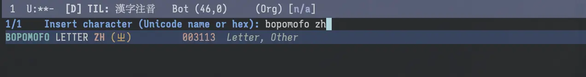

TIL: 漢字注音
ㄏㄢˋㄗˋㄓㄨˋㄧㄣ
在逛一些部落格的時候，看到了一些看不明白的符號，例如在留言板的名稱上，會看到「你ㄉ大名」，這個「ㄉ」是什麼呢？憑感覺和上下文，它應該是「的」，讀音大概也是「de」，但它具體是什麼，怎麼讀呢？
查一下不難知道，這是 注音符號，其實在一些字典和用 漢典 查字時我就見過這些符號，衹是一直沒去了解是什麼。維基百科的定義是這樣的：
注音符號，原名注音字母，簡稱注音，是標準漢語標音系統之一，以章太炎編創的「紐文」、「韻文」為藍本， 1912 年由中華民國教育部制定、1918 年正式發佈，1930 年改為現名。
清朝末年，自 1892 年起出現漢語發音教育的革命，許多知識份子研擬漢字的拼音符號系統，稱為「切音字運動」，此運動出現許多套改造漢字的方案。其中，章太炎的「紐文」與「韻文」方案後來成為注音符號的前身。因為當時的中國漢字仍是用二千年以來的「反切」方法，用漢字為漢字注音，相當不便。章太炎模仿日語假名「簡化偏旁」的辦法，利用漢字小篆的結構，創造一套記音字母。
簡單來說，注音符號的作用和拼音是一樣的，衹是表示方法不同。至於它為什麼長這樣，是因為它模仿了日語假名「簡化偏旁」的辦法，以漢字小篆的結構創造出來的。
例如「ㄅ」，它是「包」的古字，取包字的聲母，和拼音的「b」的讀音是一樣的；又例如「ㄓ」，它是「之」的古字，看起來像是從土地裡冒出來的草，本意是「出也。象 艸 過 屮，枝莖益大，有所之」，同樣也是取之字的聲母，和拼音「zh」的讀音一樣。更多的你可以在 符號字源及發音 裡找到。
我覺得注音符號的設計和 倉頡輸入法 有相似之处，它們都利用字的形狀傳達信息，讓使用者通過聯想更容易記憶它們。
例如注音裡的「ㄉ」，它的形狀像「刀」，而它也正是取了刀字的聲母，和拼音 [d] 的發音一樣；而在倉頡輸入法裡，其中一個倉頡字母是「日」，在「明」、「早」、「是」、「時」等字裡都能找到「日」的形狀，很容易能想到對應的倉頡字母。
知道了它是什麼，那怎麼輸入注音符號呢？一種辦法是用注音輸入法，在系統的繁體字輸入法中應該能找到。另一種辦法是把你的編輯器換成 Emacs (≖ᴗ≖๑)，然後你就可以用 insert-char 來輸入了，例如要輸入「ㄓ」，調用 insert-char ，輸入 bopomofo zh 就能找到了。


在 Emacs 中我安裝了 minad/vertico、oantolin/orderless、minad/marginalia 來更好地補全 minibuffer。
我知道注音符號怎麼讀，是因為我知道拼音怎麼讀，但對於外國人，他們不懂拼音，就只能通過聽發音來了解了，如果他們想學，最好是有人能教，能指正發音，才能說得標準。如果有一天，人類滅絕了，新的物種發現了當前人類的文字，說不定也搞不懂怎麼發音，就像現在朗讀古詩，也和當初作者的讀音有差異。不過我想也沒關係，只要有交流，自然而然地就會出現一套約定俗成的發音吧。